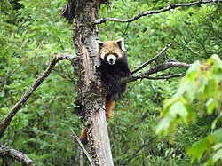
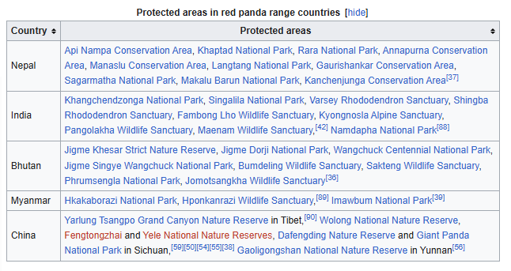

The red panda (Ailurus fulgens), also known as the lesser panda, is a small mammal native to the eastern Himalayas and southwestern China. It has dense reddish-brown fur with a black belly and legs, white-lined ears, a mostly white muzzle and a ringed tail. Its head-to-body length is 51–63.5 cm (20.1–25.0 in) with a 28–48.5 cm (11.0–19.1 in) tail, and it weighs between 3.2 and 15 kg (7.1 and 33.1 lb). It is well adapted to climbing due to its flexible joints and curved semi-retractile claws.
The red panda was formally described in 1825. The two currently recognised subspecies, the Himalayan and the Chinese red panda, genetically diverged about 250,000 years ago. The red panda's place on the evolutionary tree has been debated, but modern genetic evidence places it in close affinity with raccoons, weasels, and skunks. It is not closely related to the giant panda , which is a bear , though both possess elongated wrist bones or false thumbs" " used for grasping bamboo. The evolutionary lineage of the red panda (Ailuridae) stretches back around 25 to 18 million years ago, as indicated by extinct fossil relatives found in Eurasia and North America.
The red panda inhabits coniferous forests as well as temperate broadleaf and mixed forests, favouring steep slopes with dense bamboo cover close to water sources. It is solitary and largely arboreal. It feeds mainly on bamboo shoots and leaves, but also on fruits and blossoms. Red pandas mate in early spring, with the females giving birth to litters of up to four cubs in summer. It is threatened by poaching as well as destruction and fragmentation of habitat due to deforestation . The species has been listed as Endangered on the IUCN Red List since 2015. It is protected in all range countries.
Community-based conservationprogrammes have been initiated in Nepal, Bhutan and northeastern India; in China, it benefits from nature conservation projects. Regional captive breedingprogrammes for the red panda have been established in zoos around the world. It is featured in animated movies, video games, comic books and as the namesake of companies and music bands.
The origin of the name panda is uncertain, but one of the most likely theories is that it derived from the Nepallword "ponya". The word पञ्जा pajā or पौँजा pañjā means "ball of the foot" and "claws". The Nepali words "nigalya ponya" has been translated as "bamboo-footed" and is thought to be the red panda's Nepali name; in English, it was simply called panda, and was the only animal known under this name for more than 40 years; it became known as the red panda or lesser panda to distinguish it from the Giant panda, which was formally described and named in 1869.
The genus name Ailurus is adopted from the Ancient Greek word αἴλουρος ailouros meaning 'cat'. The specific epithet fulgens is latinfor 'shining, bright'.
The red panda was described and named in 1825 by Frederic Cuvier who gave it its current scientific name Ailurus fulgens. Cuvier's description was based on Zoological specimen, ncluding skin, paws, jawbones and teeth "from the mountains north of India", as well as an account by Alfred Duvaucel. The red panda was described earlier by Thomas Hardwicke in 1821, but his paper was only published in 1827.In 1902, Oldfield Thomas described a skull of a male red panda specimen under the name Ailurus fulgens styani in honour of Frederick William Styanwho had collected this specimen in Sichuan
The modern red panda is the only recognised speciesin the genus Ailurus It is traditionally divided into two subspecies the Himalayan red panda (A. f. fulgens) and the Chinese red panda (A. f. styani) The Himalayan subspecies has a straighter profile, a lighter coloured forehead and Ochre-tipped hairs on the lower back and rump. The Chinese subspecies has a more curved forehead and sloping snout, a darker coat with a less white face and more contrast between the tail rings.
In 2020, results of a genetic analysis of red panda samples showed that the red panda populations in the Himalayas and China were separated about 250,000 years ago. The researchers suggested that the two subspecies should be treated as distinct species. Red pandas in southeastern Tibet and northern Myanmar were found to be part of styani,while those of southern Tibet were of fulgens in the strict sense. DNA sequencing of 132 red panda faecal samples collected in Northeast India and China also showed two distinct clusters indicating that the Siang River constitutes the boundary between the Himalayan and Chinese red pandas. They probably diverged due to glaciation events on the southern Tibetan Plateau in the Pleistocene.
The placement of the red panda on the evolutionary tree has been debated. In the early 20th century, various scientists placed it in the family procyonidae with raccoons and their allies. At the time, most prominent biologists also considered the red panda to be related to the giant panda, which would eventually be found to be a bear. A 1982 study examined the similarities and differences in the skull between the red panda and the giant panda, other bears and procyonids, and placed the species in its own family Ailuridae. The author of the study considered the red panda to be more closely related to bears. A 1995 mitochondrial DNA analysis revealed that the red panda has close affinities with procyonids. Further genetic studies in 2005, 2018 and 2021 have placed the red panda within the clade Musteloidea, which also includes Procyonidae, Mustelidae (weasels and relatives) and Mephitidae (skunks and relatives)
The family Ailuridae appears to have evolved in Europe in either the Late Oligocene or Early Miocene, about 25 to 18 million years ago. The earliest member Amphictis is known from its 10 cm (4 in) skull and may have been around the same size as the modern species Its dentition consists of sharp premolars and carnassials (P4 and m1) and molars adapted for grinding (M1, M2 and m2), suggesting that it had a generalised carnivorous diet. Its placement within Ailuridae is based on the grooves on the side of its canine teeth. Other early or basal ailurids include Alopecocyon and Simocyon, whose fossils have been found throughout Eurasia and North America dating from the Middle Miocene, the latter of which survived into the Early Pliocene. Both have similar teeth to Amphictis and thus had a similar diet. The puma-sized Simocyon was likely a tree-climber and shared a "false thumb"—an extended wrist bone—with the modern species, suggesting the appendage was an adaptation to arboreal locomotion and not to feed on bamboo.
Later and more advanced ailurids are classified in the subfamily Ailurinae and are known as the "true" red pandas. These animals were smaller and more adapted for an omnivorous or herbivorous diet. The earliest known true panda is Magerictis from the Middle Miocene of Spain and known only from one tooth, a lower second molar. The tooth shows both ancestral and new characteristics having a relatively low and simple crown but also a lengthened crushing surface with developed tooth cusps like later species Later ailurines include Pristinailurus bristoli which lived in eastern North America from the late Miocene to the Early Pliocene and species of the genus Parailurus which first appear in Early Pliocene Europe, spreading across Eurasia into North America. These animals are classified as a sister taxon to the lineage of the modern red panda. In contrast to the herbivorous modern species, these ancient pandas were likely omnivores, with highly cusped molars and sharp premolars.
Analysis of 53 red panda samples from Sichuan and Yunnan showed a high level of genetic diversity. The full genome of the red panda was sequenced in 2017. Researchers have compared it to the genome of the giant panda to learn the genetics of convergent evolution, as both species have false thumbs and are adapted for a specialised bamboo diet despite having the digestive system of a carnivore. Both pandas show modifications to certain limb development genes (DYNC2H1 and PCNT), which may play roles in the development of the thumbs. In switching from a carnivorous to a herbivorous diet, both species have reactivated taste receptor genes used for detecting bitterness, though the specific genes are different
The red panda's coat is mainly red or orange-brown with a black belly and legs. The muzzle, cheeks, brows and inner ear margins are mostly white while the bushy tail has red and buff ring patterns and a dark brown tip. The colouration appears to serve as camouflage in habitat with red moss and white lichen-covered trees. The guard hairs are longer and rougher while the dense undercoat is fluffier with shorter hairs. The guard hairs on the back have a circular cross-section and are 47–56 mm (1.9–2.2 in) long. It has moderately long whiskers around the mouth, lower jaw and chin. The hair on the soles of the paws allows the animal to walk in snow.
The red panda has a relatively small head, though proportionally larger than in similarly sized raccoons, with a reduced snout and triangular ears, and nearly evenly lengthed limbs. It has a head-body length of 51–63.5 cm (20.1–25.0 in) with a 28–48.5 cm (11.0–19.1 in) tail. The Himalayan red panda is recorded to weigh 3.2–9.4 kg (7.1–20.7 lb), while the Chinese red panda weighs 4–15 kg (8.8–33.1 lb) for females and 4.2–13.4 kg (9.3–29.5 lb) for males. It has five curved digits on each foot, each with curved semi-retractile claws that aid in climbing. The pelvis and hindlimbs have flexible joints, adaptations for an arboreal quadrupedal lifestyle. While not prehensile, the tail helps the animal balance while climbing.
The forepaws possess a "false thumb", which is an extension of a wrist bone, the radial sesamoid found in many carnivorans. This thumb allows the animal to grip onto bamboo stalks and both the digits and wrist bones are highly flexible. The red panda shares this feature with the giant panda, which has a larger sesamoid that is more compressed at the sides. In addition, the red panda's sesamoid has a more sunken tip while the giant panda's curves in the middle. These features give the giant panda more developed dexterity
The red panda's skull is wide, and its lower jaw is robust. However, because it eats leaves and stems, which are not as tough, it has smaller chewing muscles than the giant panda. The digestive system of the red panda is only 4.2 times its body length, with a simple stomach, no noticeable divide between the ileum and colon, and no caecum.
Both sexes have paired anal glands that emit a secretion consisting of long-chain fatty acids, cholesterol, squalene and 2-Piperidinone; the latter is the most odoriferous compound and is perceived by humans as having an ammoniacal or pepper-like odour.
The red panda inhabits Nepal, the states of Sikkim, West Bengal and Arunachal Pradesh in India, Bhutan, southern Tibet, northern Myanmar and China's Sichuan and Yunnan provinces. The global potential habitat of the red panda has been estimated to comprise 47,100 km2 (18,200 sq mi) at most; this habitat is located in the temperate climate zone of the Himalayas with a mean annual temperature range of 18–24 °C (64–75 °F).[34] Throughout this range, it has been recorded at elevations of 2,000–4,300 m (6,600–14,100 ft).
In Nepal, it lives in six protected area complexes within the Eastern Himalayan broadleaf forests ecoregion. The westernmost records to date were obtained in three community forests in Kalikot District in 2019. Panchthar and Ilam Districts represent its easternmost range in the country, where its habitat in forest patches is surrounded by villages, livestock pastures and roads. The metapopulation in protected areas and wildlife corridors in the Kangchenjunga landscape of Sikkim and northern West Bengal is partly connected through old-growth forests outside protected areas. Forests in this landscape are dominated by Himalayan oaks (Quercus lamellosa and Q. semecarpifolia), Himalayan birch, Himalayan fir, Himalayan maple with bamboo, Rhododendron and some black juniper shrub growing in the understoreys. Records in Bhutan, Arunachal Pradesh's Pangchen Valley, West Kameng and Shi Yomi districts indicate that it frequents habitats with Yushania and Thamnocalamus bamboo, medium-sized Rhododendron, whitebeam and chinquapin trees. In China, it inhabits the Hengduan Mountains subalpine conifer forests and Qionglai-Minshan conifer forests in the Hengduan, Qionglai, Xiaoxiang, Daxiangling and Liangshan Mountains in Sichuan.[38] In the adjacent Yunnan province, it was recorded only in the northwestern montane part.
The red panda is difficult to observe in the wild, and most studies on its behaviour have taken place in captivity. The red panda appears to be both nocturnal and crepuscular, sleeping in between periods of activity at night. It typically rests or sleeps in trees or other elevated spaces, stretched out prone on a branch with legs dangling when it is hot, and curled up with its hindlimb over the face when it is cold. It is adapted for climbing and descends to the ground head-first with the hindfeet holding on to the middle of the tree trunk. It moves quickly on the ground by trotting or bounding.
Adult pandas are generally solitary and territorial. Individuals mark their home range or territorial boundaries with urine, faeces and secretions from the anal and surrounding glands. Scent-marking is usually done on the ground, with males marking more often and for longer periods In China's Wolong National Nature Reserve, the home range of a radio-collared female was 0.94 km2 (0.36 sq mi), while that of a male was 1.11 km2 (0.43 sq mi). A one-year-long monitoring study of ten red pandas in eastern Nepal showed that the four males had median home ranges of 1.73 km2 (0.67 sq mi) and the six females of 0.94 km2 (0.36 sq mi) within a forest cover of at least 19.2 ha (47 acres). The females travelled 419–841 m (1,375–2,759 ft) per day and the males 660–1,473 m (2,165–4,833 ft). In the mating season from January to March, adults travelled a mean of 795 m (2,608 ft) and subadults a mean of 861 m (2,825 ft).[41] They all had larger home ranges in areas with low forest cover and reduced their activity in areas that were disturbed by people, livestock and dogs.
The red panda is largely herbivorous and feeds primarily on bamboo, mainly the genera Phyllostachys, Sinarundinaria, Thamnocalamus and Chimonobambusa. It also feeds on fruits, blossoms, acorns, eggs, birds and small mammals. Bamboo leaves may be the most abundant food item year-round and the only food they can access during winter. In Wolong National Nature Reserve, leaves of the bamboo species Bashania fangiana were found in nearly 94 per cent of analysed droppings, and its shoots were found in 59 per cent of the droppings found in June.
It also feeds on fruits, blossoms, acorns, eggs, birds and small mammals. Bamboo leaves may be the most abundant food item year-round and the only food they can access during winter. In Wolong National Nature Reserve, leaves of the bamboo species Bashania fangiana were found in nearly 94 per cent of analysed droppings, and its shoots were found in 59 per cent of the droppings found in June
The red panda grabs food with one of its front paws and usually eats sitting down or standing. When foraging for bamboo, it grabs the plant by the stem and pulls it down towards its jaws. It bites the leaves with the side of the cheek teeth and then shears, chews and swallows. Smaller food like blossoms, berries and small leaves are eaten differently, being clipped by the incisors. Having the gastrointestinal tract of a carnivore, the red panda cannot properly digest bamboo, which passes through its gut in two to four hours. Hence, it must consume large amounts of the most nutritious plant matter. It eats over 1.5 kg (3 lb 5 oz) of fresh leaves or 4 kg (9 lb) of fresh shoots in a day with crude proteins and fats being the most easily digested. Digestion is highest in summer and fall but lowest in winter, and is easier for shoots than leaves. The red panda's metabolic rate is comparable to other mammals of its size, despite its poor diet.The red panda digests almost a third of dry matter, which is more efficient than the giant panda digesting 17 per cent. Microbes in the gut may aid in its processing of bamboo; the microbiota community in the red panda is less diverse than in other mammals.
At least seven different vocalisations have been recorded from the red panda, comprising growls, barks, squeals, hoots, bleats, grunts and twitters. Growling, barking, grunting and squealing are produced during fights and aggressive chasing. Hooting is made in response to being approached by another individual. Bleating is associated with scent-marking and sniffing. Males may bleat during mating, while females twitter. During both play fighting and aggressive fighting, individuals curve their backs and tails while slowly moving their heads up and down. They then turn their heads while jaw-clapping, move their heads laterally and lift a forepaw to strike. They stand on their hind legs, raise the forelimbs above the head and then pounce. Two red pandas may "stare" at each other from a distance.
Red pandas are long-day breeders, reproducing after the winter solstice as daylight grows longer. Mating thus takes place from January to March, with births occurring from May to August. Reproduction is delayed by six months for captive pandas in the southern hemisphere. Oestrous lasts a day, and females can enter oestrous multiple times a season, but it is not known how long the intervals between each cycle last.
As the reproductive season begins, males and females interact more, and will rest, move, and feed near each other. An oestrous female will spend more time marking and males will inspect her anogenital region. Receptive females make tail-flicks and position themselves in a lordosis pose, with the front lowered to the ground and the spine curved. Copulation involves the male mounting the female from behind and on top, though face-to-face matings as well as belly-to-back matings while lying on the sides also occur. The male will grab the female by the sides with his front paws instead of biting her neck. Intromission is 2–25 minutes long, and the couple groom each other between each bout.
Gestation lasts about 131 days.[73] Prior to giving birth, the female selects a denning site, such as a tree, log or stump hollow or rock crevice, and builds a nest using material from nearby, such as twigs, sticks, branches, bark bits, leaves, grass and moss. Litters typically consist of one to four cubs that are born fully furred but blind. They are entirely dependent on their mother for the first three to four months until they first leave the nest. They nurse for their first five months.[73] The bond between mother and offspring lasts until the next mating season. Cubs are fully grown at around 12 months and at around 18 months they reach sexual maturity. Two radio-collared cubs in eastern Nepal separated from their mothers at the age of 7–8 months and left their birth areas three weeks later. They reached new home ranges within 26–42 days and became residents after exploring them for 42–44 days.
The red panda's lifespan in captivity reaches 14 years.[29] They have been recorded falling prey to leopards in the wild. Faecal samples of red panda collected in Nepal contained parasitic protozoa, amoebozoans, roundworms, trematodes and tapeworms. Roundworms, tapeworms and coccidia were also found in red panda scat collected in Rara and Langtang National Parks.[77] Fourteen red pandas at the Knoxville Zoo suffered from severe ringworm, so the tails of two were amputated.[78] Chagas disease was reported as the cause of death of a red panda kept in a Kansas zoo. Amdoparvovirus was detected in the scat of six red pandas in the Sacramento Zoo.[80] Eight captive red pandas in a Chinese zoo suffered from shortness of breath and fever shortly before they died of pneumonia; autopsy revealed that they had antibodies to the protozoans Toxoplasma gondii and Sarcocystis species indicating that they were intermediate hosts. A captive red panda in the Chengdu Research Base of Giant Panda Breeding died of unknown reasons; an autopsy showed that its kidneys, liver and lungs were damaged by a bacterial infection caused by Escherichia coli
The red panda is primarily threatened by the destruction and fragmentation of its habitat, the causes of which include increasing human population, deforestation, the unlawful taking of non-wood forest material and disturbances by herders and livestock. Trampling by livestock inhibits bamboo growth, and clearcutting decreases the ability of some bamboo species to regenerate. The cut lumber stock in Sichuan alone reached 2,661,000 m3 (94,000,000 cu ft) in 1958–1960, and around 3,597.9 km2 (1,389.2 sq mi) of red panda habitat were logged between the mid-1970s and late 1990s.[48] Throughout Nepal, the red panda habitat outside protected areas is negatively affected by solid waste, livestock trails and herding stations, and people collecting firewood and medicinal plants. Threats identified in Nepal's Lamjung District include grazing by livestock during seasonal transhumance, human-made forest fires and the collection of bamboo as cattle fodder in winter. Vehicular traffic is a significant barrier to red panda movement between habitat patches.
Poaching is also a major threat. In Nepal, 121 red panda skins were confiscated between 2008 and 2018. Traps meant for other wildlife have been recorded killing red pandas. In Myanmar, the red panda is threatened by hunting using guns and traps; since roads to the border with China were built starting in the early 2000s, red panda skins and live animals have been traded and smuggled across the border. In southwestern China, the red panda is hunted for its fur, especially for the highly valued bushy tails, from which hats are produced. The red panda population in China has been reported to have decreased by 40 per cent over the last 50 years, and the population in western Himalayan areas are considered to be smaller. Between 2005 and 2017, 35 live and seven dead red pandas were confiscated in Sichuan, and several traders were sentenced to 3–12 years of imprisonment. A month-long survey of 65 shops in nine Chinese counties in the spring of 2017 revealed only one in Yunnan offered hats made of red panda skins, and red panda tails were offered in an online forum.
A red panda anti-poaching unit and community-based monitoring have been established in Langtang National Park. Members of Community Forest User Groups also protect and monitor red panda habitats in other parts of Nepal. Community outreach programs have been initiated in eastern Nepal using information boards, radio broadcasting and the annual International Red Panda Day in September; several schools endorsed a red panda conservation manual as part of their curricula.
.jpg)
Since 2010, community-based conservation programmes have been initiated in 10 districts in Nepal that aim to help villagers reduce their dependence on natural resources through improved herding and food processing practices and alternative income possibilities. The Nepali government ratified a five-year Red Panda Conservation Action Plan in 2019.[93] From 2016 to 2019, 35 ha (86 acres) of high-elevation rangeland in Merak, Bhutan, was restored and fenced in cooperation with 120 herder families to protect the red panda forest habitat and improve communal land. Villagers in Arunachal Pradesh established two community conservation areas to protect the red panda habitat from disturbance and exploitation of forest resources. China has initiated several projects to protect its environment and wildlife, including Grain for Green, The Natural Forest Protection Project and the National Wildlife/Natural Reserve Construction Project. For the last project, the red panda is not listed as a key species for protection but may benefit from the protection of the giant panda and golden snub-nosed monkey, with which it overlaps in range
The London Zoo received two red pandas in 1869 and 1876, the first of which was caught in Darjeeling. The Calcutta Zoo received a live red panda in 1877, the Philadelphia Zoo in 1906, and Artis and Cologne Zoos in 1908. In 1908, the first captive red panda cubs were born in an Indian zoo. In 1940, the San Diego Zoo imported four red pandas from India that had been caught in Nepal; their first litter was born in 1941. Cubs that were born later were sent to other zoos; by 1969, about 250 red pandas had been exhibited in zoos. The Taronga Conservation Society started keeping red pandas in 1977
In 1978, a breed registry, the International Red Panda Studbook, was set up, followed by the Red Panda European Endangered Species Programme in 1985. Members of international zoos ratified a global master plan for the captive breeding of the red panda in 1993. By late 2015, 219 red pandas lived in 42 zoos in Japan. The Padmaja Naidu Himalayan Zoological Park participates in the Red Panda Species Survival Plan and kept about 25 red pandas by 2016. By the end of 2019, 182 European zoos kept 407 red pandas. Regional captive breeding programmes have also been established in North American, Australasian and South African zoos.
The red panda's role in the culture and folklore of local people is limited. A drawing of a red panda exists on a 13th-century Chinese scroll. In Nepal's Taplejung District, red panda claws are used for treating epilepsy; its skin is used in rituals for treating sick people, making hats, scarecrows and decorating houses. In western Nepal, Magar shamans use its skin and fur in their ritual dresses and believe that it protects against evil spirits. People in central Bhutan consider red pandas to be reincarnations of Buddhist monks. Some tribal people in northeast India and the Yi people believe that it brings good luck to wear red panda tails or hats made of its fur. In China, the fur is used for local cultural ceremonies. At weddings, the bridegroom traditionally carries the hide. Hats made of red panda tails are also used by local newlyweds as a "good-luck charm"
The red panda was recognised as the state animal of Sikkim in the early 1990s and was the mascot of the Darjeeling Tea Festival. It has been featured on stamps and coins issued by several red panda range states. Anthropomorphic red pandas feature in animated movies and TV series such as The White Snake Enchantress, Bamboo Bears, Barbie as the Island Princess, DreamWorks' Kung Fu Panda franchise, Aggretsuko and Disney/Pixar's Turning Red, and in several video games and comic books. It is the namesake of the Firefox browser and has been used as the namesake of music bands and of companies. Its appearance has been used for plush toys, t-shirts, postcards and other items
wikipedia